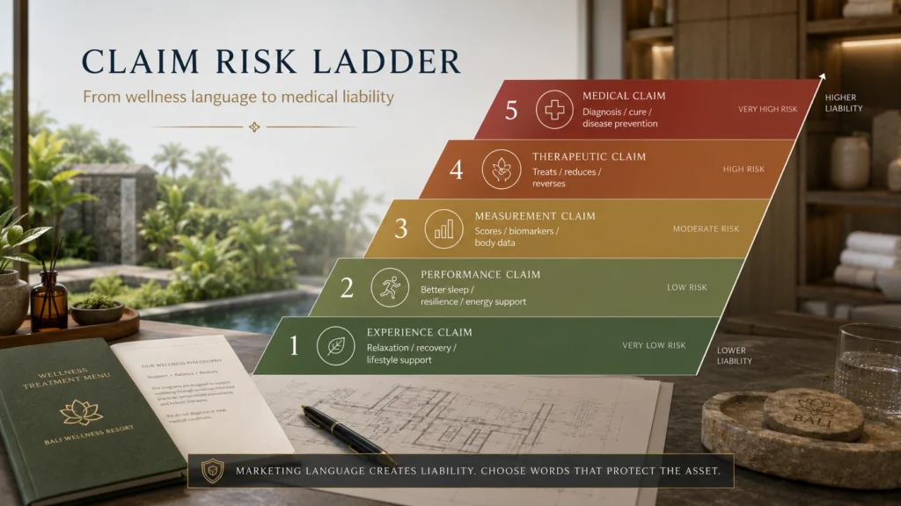
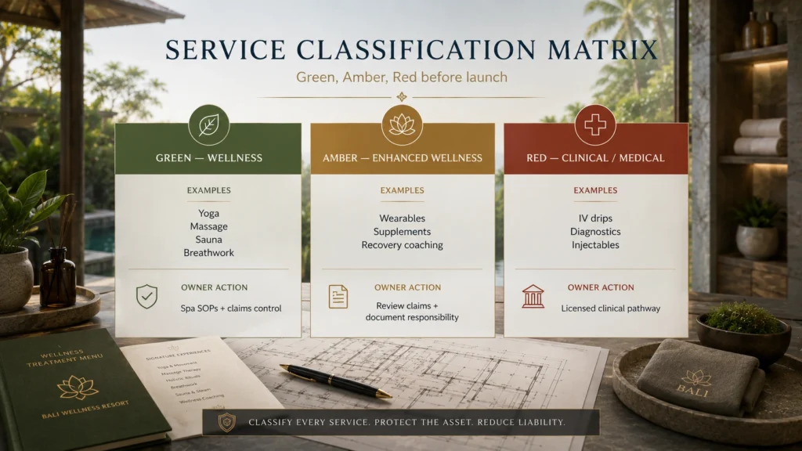
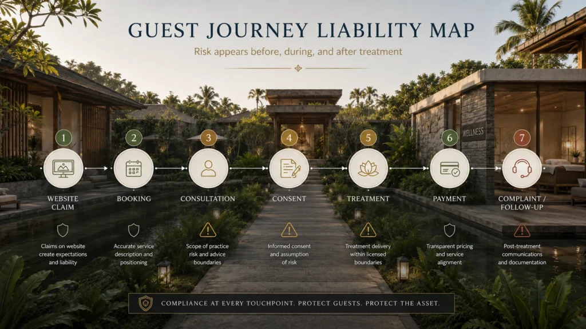
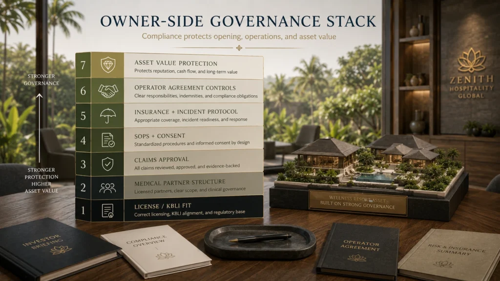

Bali wellness resort compliance starts before the first treatment is sold. Every Bali wellness resort wants to claim transformation, yet too few owners check whether the treatment menu, website copy, staff structure, licensing classification, medical partner agreement, and insurance actually support those claims.
The risk is not that wellness is illegal. The real risk starts when a hospitality business promises, sells, or delivers medical outcomes through a non-medical operating structure.
For owners, developers, investors, and operators, Bali wellness resort compliance is no longer only a legal question. It is a Product DNA, licensing, operating model, marketing, medical-partner, and liability-control question.
This article is written for owners, developers, investors, operators, asset managers, and family offices planning or operating wellness, recovery, longevity, spa, or medical-wellness assets in Bali. It is strategic compliance guidance, not legal advice. Any live project should be reviewed with qualified Indonesian legal counsel, regulatory advisers, and licensed medical partners.
Key Takeaways
- The service is not the only risk. Liability comes from the combination of the claim, license, provider, consent process, operating entity, guest journey, and clinical governance.
- Spa licensing is not clinic licensing. Indonesia’s OSS classification for KBLI 96122 SPA activity covers spa and holistic wellness services. However, it does not automatically authorize clinical or medical activity.
- IV drips, injectables, diagnostic testing, clinical detox, hormone claims, and disease-related promises should not sit inside a normal hotel spa operating model. These services require a properly licensed clinical pathway and authorized medical personnel.
- Marketing language can create liability before operations start. “Supports relaxation” sits in a different risk category from “treats anxiety,” “balances hormones,” “detoxifies the liver,” or “reverses biological age.”
- The correct owner-side response is governance, not cosmetic wording. Wellness resorts need a Clinical-Lifestyle Boundary Register, claims approval process, medical partner structure, SOPs, consent logic, incident protocol, and audit rhythm.
Why Bali Wellness Resort Compliance Matters Now
Bali’s wellness sector is no longer only about massage, yoga, retreats, spa rituals, and healthy food.
New projects increasingly reference longevity, recovery, biohacking, diagnostics, IV therapy, hormonal balance, detoxification, regenerative treatments, and clinical supplements. As a result, owners can create stronger commercial positioning. However, they also create a different risk class.
Bali remains highly visible as a hospitality market. According to BPS Bali’s March 2026 tourism release, Bali recorded 472,070 direct foreign tourist visits in March 2026 and a 52.54% room occupancy rate for star-rated hotels.
This level of guest exposure makes wellness claims more visible to regulators, online reviewers, insurers, competitors, journalists, and potential claimants.
At the same time, Indonesia’s health regulatory environment is more structured than many foreign investors assume. UU No. 17/2023 on Health provides the current legal framework for health services, health facilities, health personnel, supervision, investigation, and sanctions.
In addition, Permenkes No. 11/2025 governs standards for business activities and products or services under risk-based business licensing in the health subsector.
Therefore, the owner-side conclusion is clear: if the product moves from lifestyle wellness into clinical wellness, the governance must move with it.
This is why medical claim compliance should be tested as early as a Bali hotel feasibility study, not left until the spa menu has already been designed.
The Core Problem: Wellness Claims Are Becoming Medical Promises
Many wellness resorts do not deliberately break rules. They drift into risk.
In practice, the sequence often looks like this:
First, the concept deck says “longevity,” “detox,” “cellular reset,” “immune support,” or “hormonal balance.”
Next, the architect allocates treatment rooms without defining clinical versus non-clinical use.
After that, the marketing team writes transformational claims before the licensing path has been confirmed.
Later, a third-party doctor, nurse, clinic, therapist, or “wellness expert” gets added into the model.
Finally, the owner assumes the operator, clinic, or contractor carries the risk.
However, the guest experiences the offer as one integrated resort service.
That is where liability begins. In the guest’s mind, the resort promised the outcome. In the operator’s flow, the treatment happened inside the guest journey. In the owner’s asset, the property monetized the service as part of the resort experience.
If the license, clinical responsibility, informed consent, medical records, staff credentials, and incident protocol remain unclear, the risk does not stay neatly isolated.

Bali Wellness Resort Compliance: Where Marketing Crosses Into Medical Practice
Bali wellness resort compliance becomes more serious when the claim or service implies diagnosis, treatment, cure, prevention, clinical measurement, invasive intervention, or disease-related outcomes.
This does not mean wellness operators must avoid all health language. Instead, the claim must match the actual operating authority behind the service.
| Claim / Service Type | Lower-Risk Wellness Framing | Higher-Risk Medical Framing |
|---|---|---|
| Massage | Supports relaxation and muscle recovery | Treats chronic pain or medical injury |
| Breathwork | Supports nervous system regulation | Treats anxiety disorder or trauma |
| Nutrition | Supports balanced lifestyle habits | Reverses diabetes or treats disease |
| Sauna / ice bath | Supports recovery and resilience | Detoxifies organs or cures inflammation |
| Supplements | General wellness support if compliant | Clinical treatment or disease prevention claim |
| Diagnostics | Wellness screening only if properly structured | Medical diagnosis, lab interpretation, disease risk assessment |
| IV therapy | Not appropriate as a normal spa service | Clinical procedure requiring licensed pathway |
| Injectables | Not appropriate as a normal spa service | Medical or aesthetic procedure requiring authorized personnel |
Supplements create a specific risk area. BPOM Regulation No. 19/2022 provides guidance on health supplement claims. That matters when a resort sells supplements, protocol packs, detox kits, performance formulas, hormone-support products, or “clinical-grade” retail items.
For owners, the practical issue is not only whether a claim sounds attractive. The real question is whether the claim is legally supportable, clinically supportable, operationally controllable, and commercially insurable.
Spa, Medical Spa, Clinic, and Resort: The Boundary Owners Must Understand
A resort spa does not become a clinic because it talks about health.
Likewise, a clinic does not integrate safely into a resort only because it operates inside the property.
The structure matters.
Indonesia’s OSS system classifies KBLI 96122 as Aktivitas SPA (Sante Par Aqua). The official description covers tourism-based health and care services combining traditional and modern holistic methods, including water, massage using herbs, aromatherapy, physical exercise, color therapy, music therapy, food, and beverage, with the goal of body, mind, and soul balance.
That is a wellness and spa framework. It is not a blank permission to deliver clinical services.
The same OSS classification separates regular SPA scope from activity moving toward Medical SPA. The official tourism standardization platform also lists spa activity under Kemenpar’s SPA standardization reference.
This distinction has commercial importance. If a wellness resort operates under a spa or hospitality classification but sells clinical procedures, the owner cannot solve the problem by calling the service “wellness.”
The operating model must reflect the real risk category.
What Most Owners and Investors Get Wrong
Most owners review medical-wellness compliance too late.
They ask:
“Can we add IV drips?”
They should ask:
“Which legal entity provides the treatment, under which license, with which personnel, consent process, medical director, insurance, data system, SOP, claims approval process, and guest incident protocol?”
They ask:
“Can our spa menu say detox?”
They should ask:
“Does the word detox refer to a lifestyle ritual, a supplement claim, a medical protocol, or a clinical promise?”
They ask:
“Can a medical partner handle this?”
They should ask:
“Does the medical partner visibly and contractually carry responsibility for the clinical act, or does the resort still market and control the service as if it were a hotel amenity?”
This is where owners need more than standard legal formation work. They need owner-side operating logic. A lawyer may help form the company or review the license. However, an owner’s representative for Bali hotel and wellness projects should also test whether the product, operator, guest journey, claims, and partner structure actually work in practice.
The Zenith View: Compliance Is an Operating Model, Not a Legal Footnote
The operator-first view is simple: medical claim compliance cannot be solved by the legal team alone after the concept has already been designed and marketed.
Owners must solve it inside the Product DNA.
At Zenith, we would treat every wellness resort as three connected but separate layers:
| Layer | What It Includes | Governance Requirement |
|---|---|---|
| Hospitality Layer | Rooms, arrival, F&B, concierge, service journey, revenue management | Hotel operating standards, guest experience, commercial controls |
| Wellness Layer | Massage, movement, rituals, breathwork, recovery, sauna, ice bath, non-medical lifestyle programming | Spa/wellness SOPs, therapist training, hygiene, claims discipline |
| Licensed Medical Layer | Diagnostics, IV therapy, injectables, medical consultation, clinical programs, prescriptions, medical records | Licensed facility or partner, medical director, authorized personnel, consent, records, clinical liability |
The commercial danger comes from mixing these layers without governance.
A guest may experience one seamless brand. However, the owner must know which entity, license, person, SOP, and insurance policy carries responsibility at each point in the journey.
This is also a brand architecture issue. If the wellness, clinic, spa, retreat, supplement retail, and hotel promises are confused, the market-facing brand becomes harder to govern. Therefore, boutique hotel brand architecture in Bali should not be separated from operating and compliance logic.

Bali Wellness Resort Compliance Framework: The Clinical-Lifestyle Boundary
Zenith would classify every service before launch into one of three lanes.
| Lane | Description | Typical Examples | Owner Action |
|---|---|---|---|
| Green - Wellness | Non-invasive, lifestyle, relaxation, performance-support, no diagnosis or disease claim | Yoga, meditation, massage, sound healing, sauna, ice bath, breathwork | Keep within spa/wellness SOPs, staff training, hygiene, claim control |
| Amber - Enhanced Wellness | Borderline claims, measurable outcomes, supplements, recovery protocols, wearable data, nutrition programs | Sleep score review, recovery coaching, supplement retail, non-diagnostic wellness assessments | Request legal and clinical review, approve claims, add disclaimers, review partner role, document responsibility |
| Red - Clinical / Medical | Invasive, diagnostic, therapeutic, prescriptive, disease-related, medical records, lab testing, injectables | IV drips, blood panels, hormone interpretation, Botox, fillers, prescription protocols, medical detox | Use a licensed clinical structure, medical director, authorized personnel, consent, insurance, and clinical SOPs |
The key is not to ban innovation.
The key is to stop treating clinical services like spa add-ons.

Operational Implications for Bali Wellness Resort Compliance
A Bali wellness resort that wants to operate credibly in recovery, longevity, or medical wellness should build an operating system around the clinical boundary.
This is where Bali wellness resort compliance becomes practical.
It is no longer only about what the law says. It is about what the team does every day.
1. Create a Treatment and Claims Register
Every treatment, class, protocol, package, supplement, and diagnostic touchpoint should sit in one register.
Each item should carry a Green, Amber, or Red tag.
The register should include:
- guest-facing name;
- internal service description;
- claim language allowed;
- claim language prohibited;
- license basis;
- responsible department or partner;
- required staff credential;
- consent requirement;
- incident protocol;
- review date.
This register should be completed before the website goes live and before pre-opening sales begin. It should sit inside the same planning discipline as a Bali hotel pre-opening strategy, because claims, staffing, SOPs, and partner responsibilities affect launch readiness.
2. Separate Wellness SOPs from Clinical SOPs
A spa SOP is not a medical SOP.
A therapist checklist is not a clinical protocol.
A guest waiver is not a medical informed consent process.
If the resort includes clinical services, the SOP pack must show where hospitality ends and clinical responsibility begins.
This affects:
- booking scripts;
- reception handover;
- consultation flow;
- treatment-room access;
- guest records;
- payment process;
- adverse-event response;
- complaint escalation;
- insurance notification;
- operator and owner reporting.
3. Make the Medical Partner Structure Explicit
If a licensed clinic or medical partner is involved, the agreement should define the exact clinical responsibility.
The agreement should cover:
- scope of clinical services;
- medical director responsibility;
- licensing responsibility;
- personnel credentials;
- use of rooms and equipment;
- medical records ownership and confidentiality;
- guest consent;
- adverse-event handling;
- emergency escalation;
- branding and marketing approval;
- indemnities and insurance.
The medical partner should not be a decorative credibility signal. It must carry a real licensed role in the operating model.
4. Train the Sales and Marketing Team
Many compliance failures start in sales copy, not treatment rooms.
Marketing teams should know the difference between:
- “supports relaxation” and “treats anxiety”;
- “recovery experience” and “injury treatment”;
- “wellness screening” and “medical diagnosis”;
- “nutritional support” and “disease management”;
- “longevity programming” and “age reversal.”
This matters in pre-opening campaigns, investor decks, membership sales, PR interviews, influencer captions, spa menus, and paid ads.
The more premium the wellness promise, the more disciplined the claim architecture must be.
5. Audit Guest Journey Touchpoints
The clinical boundary must appear inside the guest journey.
That means reviewing:
- booking page;
- spa menu;
- consultation form;
- arrival script;
- treatment-room handoff;
- payment flow;
- receipt or invoice;
- review request;
- follow-up message;
- complaint handling.
If the guest buys a “medical” service from the resort website, pays the resort, receives the service in the resort, and complains to the resort, the owner should not assume liability has automatically shifted to a third party.

Bali Wellness Resort Compliance and Commercial Risk
Medical claim compliance often gets treated as a legal cost.
That view is too narrow.
It affects asset value.
1. Licensing mistakes can delay opening
If the product concept promises clinical wellness but the licensing path only supports spa and hospitality activity, the owner may need to revise the opening program late.
That can affect launch campaigns, hiring, fit-out, partner onboarding, and revenue assumptions.
For investors, this is not a small administrative issue. It can change the opening timeline, pre-opening budget, operating model, and commercial forecast.
2. Wrong claims create reputational exposure
A normal spa complaint is one type of issue.
A guest alleging harm from an unlicensed clinical treatment or misleading medical claim creates a different order of risk.
It can affect:
- online reviews;
- press exposure;
- regulator attention;
- insurance coverage;
- investor confidence;
- operator trust;
- partner confidence;
- future saleability of the asset.
3. Medical-wellness revenue may require a different operating model
Clinical services can improve positioning and revenue per guest, but only if the structure supports them.
Owners may need:
- separate entities;
- licensed partners;
- medical directors;
- special rooms;
- clinical equipment controls;
- consent workflows;
- privacy systems;
- additional insurance;
- clinical incident protocols.
If these costs are ignored in the original model, the medical-wellness upside may be overstated.
4. Operator agreements must allocate responsibility clearly
If the asset has a hotel operator, wellness operator, and clinical partner, the management agreement cannot leave clinical responsibility vague.
The owner needs clear:
- service matrices;
- exclusions;
- approval rights;
- authority levels;
- data rules;
- brand rules;
- claims approval processes;
- incident escalation;
- liability allocation;
- insurance requirements.
A serious wellness asset should not sign an operating agreement before the clinical-lifestyle boundary is documented.
5. The strongest brands will be the most disciplined
In luxury wellness hospitality, credibility is becoming more valuable than hype.
The winning properties will not be the ones making the most aggressive claims. They will be the ones that can prove governance, safety, clinical boundary discipline, and guest trust.
This is where Zenith Hospitality Global sees the next major opportunity in Bali wellness hospitality: assets that combine wellness ambition with owner-side discipline.
What To Do Before Committing Capital or Launching the Treatment Menu
Before a Bali wellness resort launches, repositions, or adds medical-wellness services, the owner should complete five checks.
| Check | Key Question | Output |
|---|---|---|
| Service Classification Check | Is each service wellness, enhanced wellness, or clinical? | Clinical-Lifestyle Boundary Register |
| Claim Review | What can legally and ethically be said in marketing? | Approved Claims Library |
| Licensing Path Review | Does the business license match the real activity? | License / KBLI / permit gap note |
| Medical Partner Review | Who carries clinical responsibility? | Partner scope and responsibility matrix |
| Operating Governance Review | What happens if something goes wrong? | SOP, consent, incident, insurance, audit framework |
This should happen before architecture is finalized, before the spa menu is printed, before the website goes live, before the operator agreement is signed, and before the investor model assumes revenue from clinical services.
The earlier this work is done, the less expensive it is to fix.
FAQ
Can a Bali wellness resort offer IV therapy?
A Bali wellness resort should not treat IV therapy as a normal spa add-on.
IV therapy should be handled as a clinical service through the correct licensed medical pathway, with authorized medical personnel, appropriate consent, documentation, insurance, and incident protocols.
The issue is not whether IV therapy can exist in Bali. The issue is whether the resort’s entity, license, partner structure, personnel, claims, and guest journey are properly governed.
Is a spa license enough for medical wellness services?
No. A spa classification is not a blanket permission to deliver clinical services.
Indonesia’s OSS classification for SPA activity covers holistic spa and wellness services. However, it does not automatically authorize diagnostics, injectables, IV therapy, medical detox, prescription-based programs, or disease-related claims.
If the concept includes clinical services, the owner should obtain project-specific legal and regulatory advice before launch.
Can a resort avoid liability by using a third-party medical partner?
Not automatically.
A third-party medical partner can help create a compliant model, but the contract and operating reality must be clear.
If the resort markets the service, controls the guest journey, receives payment, houses the treatment, and handles complaints, the owner and operator may still face reputational and commercial exposure.
The agreement must define medical responsibility, consent, records, insurance, emergency handling, and marketing approval.
What wellness claims are safer?
Safer claims usually describe general support, experience, or lifestyle benefit rather than medical outcome.
For example, “supports relaxation,” “designed for recovery,” or “helps guests build healthier routines” is generally lower risk than “treats anxiety,” “balances hormones,” “detoxifies the liver,” or “reverses biological age.”
Even softer claims should be reviewed if linked to supplements, diagnostics, devices, invasive procedures, or measurable health outcomes.
Why does Bali wellness resort compliance matter to investors?
Bali wellness resort compliance matters because medical-wellness risk affects opening risk, brand risk, operational continuity, insurance, partner selection, management agreements, and valuation.
A property that markets clinical wellness without the correct governance may create future legal and reputational problems.
By contrast, a property that structures the clinical-lifestyle boundary correctly can build a more defensible, credible, and scalable wellness platform.
When should owners review medical claim compliance?
Owners should review medical claim compliance before the Product DNA is finalized.
The boundary should be reviewed before design development, treatment-room planning, medical partner selection, operator contracts, website copy, treatment menus, pre-opening sales, and investor materials.
If the review happens only after the marketing campaign is live, the project may already have created unnecessary exposure.
Summary Takeaways
- Bali wellness resorts must distinguish between hospitality, wellness, and licensed medical activity.
- Bali wellness resort compliance is not only about the treatment. It is about the alignment between claim, license, staff, partner, consent, SOP, insurance, and guest journey.
- Spa classification does not automatically cover Medical SPA or clinical services.
- Supplements, diagnostics, IV therapy, injectables, and detox language need careful review before being sold or promoted.
- Owners should solve the clinical-lifestyle boundary at Product DNA and pre-opening governance stage, not after launch.
- The strongest wellness assets will combine commercial ambition with regulatory discipline and operational clarity.
CTA
If you are developing, repositioning, or operating a wellness resort in Bali, Zenith can review your treatment menu, medical-wellness concept, marketing claims, guest journey, partner structure, and pre-opening governance before liability is built into the asset.
Start with a Clinical-Lifestyle Boundary Audit before you launch the wellness promise.
Start a conversation